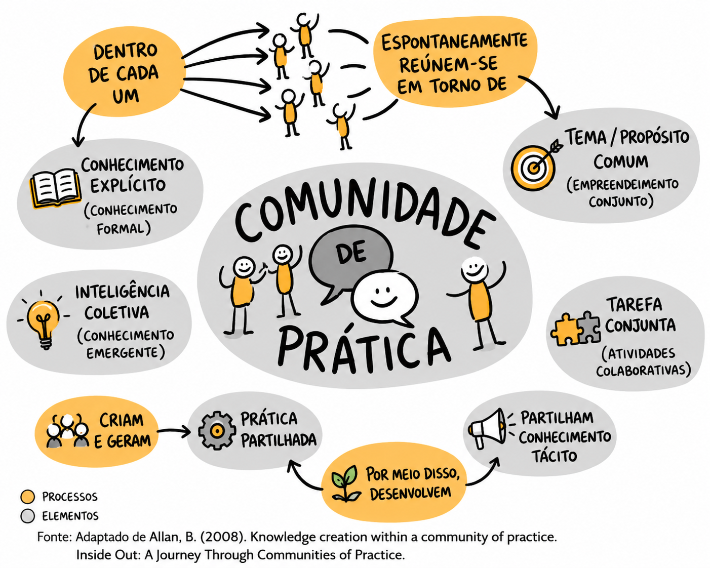

<section class="slide light" id="s3">
  <div class="slide-inner">
    <div>
      <p class="kicker">Conceito fundamental</p>
      <h2>O que é uma CoP?</h2>
    </div>
    <div class="layout-cop-definition">
      <div class="cop-definition-left">
        
      </div>
      <div class="cop-definition-right">
        <p class="definition-intro">
          Grupo de pessoas que partilham uma <strong>preocupação</strong>, um conjunto de problemas ou uma paixão por um tema, e que aprofundam o seu <strong>conhecimento e perícia</strong> através de interação contínua.
        </p>
        <div class="triad">
          <article class="panel">
            <div class="panel-header">
              <span class="panel-icon">🎯</span>
              <strong>Domínio</strong>
            </div>
            <p>Identidade e área de conhecimento partilhada que define o foco e propósito da comunidade.</p>
          </article>
          <article class="panel">
            <div class="panel-header">
              <span class="panel-icon">👥</span>
              <strong>Comunidade</strong>
            </div>
            <p>Relações e interações entre membros que constroem confiança e sentido de pertença.</p>
          </article>
          <article class="panel">
            <div class="panel-header">
              <span class="panel-icon">🧰</span>
              <strong>Prática</strong>
            </div>
            <p>Repertório partilhado de recursos, experiências, ferramentas e formas de fazer.</p>
          </article>
        </div>
      </div>
    </div>
    <div class="slide-footer-quote">
      <span class="quote-symbol">“</span>
      <p>
        Os três pilares — Domínio, Comunidade e Prática — formam o triângulo fundamental de qualquer CoP.
        <cite>— WENGER, E. (1998). COMMUNITIES OF PRACTICE: LEARNING, MEANING, AND IDENTITY.</cite>
      </p>
    </div>
  </div>
</section>
